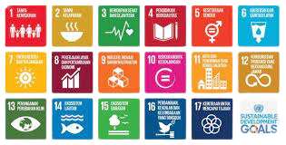

SDGs
let me introduce myself,hi everyone! my name is kesya nurmayla from X-G class. Tujuan Pembangunan Berkelanjutan (TPB)/Sustainable Development Goals (SDGs) adalah pembangunan yang menjaga peningkatan kesejahteraan ekonomi masyarakat secara berkesinambungan, pembangunan yang menjaga keberlanjutan kehidupan sosial masyarakat, pembangunan yang menjaga kualitas lingkungan hidup serta pembangunan yang menjamin keadilan dan terlaksananya tata kelola yang mampu menjaga peningkatan kualitas hidup dari satu generasi ke generasi berikutnya. TPB/SDGs merupakan komitmen global dan nasional dalam upaya untuk menyejahterakan masyarakat mencakup 17 tujuan yaitu (1) Tanpa Kemiskinan; (2) Tanpa Kelaparan; (3) Kehidupan Sehat dan Sejahtera; (4) Pendidikan Berkualitas; (5) Kesetaraan Gender; (6) Air Bersih dan Sanitasi Layak; (7) Energi Bersih dan Terjangkau; (8) Pekerjaan Layak dan Pertumbuhan Ekonomi; (9) Industri, Inovasi dan Infrastruktur; (10) Berkurangnya Kesenjangan; (11) Kota dan Permukiman yang Berkelanjutan; (12) Konsumsi dan Produksi yang Bertanggung Jawab; (13) Penanganan Perubahan Iklim; (14) Ekosistem Lautan; (15) Ekosistem Daratan; (16) Perdamaian, Keadilan dan Kelembagaan yang Tangguh; (17) Kemitraan untuk Mencapai Tujuan. dari 17 tema yang ada, topik yang kelompokku ambil adalah mengenai ekosistem laut.<3.
LIFE BELOW WATER
LOGO DAN FILOSOFI KELOMPOK